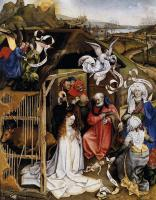

| Virgin and Child
1410
|
 | The Holy Trinity
1410
|
 | St Veronica
1410
|
 | Saint John the Baptist
1415
|
 | Annunciation
1420
|
|  | The Nativity
1420
|
 | Seilern Triptych
1420 Triptych with the Entombment of Christ |
 | Blessing Christ
1424
|
 | Praying Virgin
1424
|
 | Madonna by a Grassy Bank
1425
|
 | Mérode Altarpiece
1427
|
 | The Marriage of Mary
1428
|
 | Annunciation
1430
|
 | The Virgin and Child before a Firescreen
1430
|
 | Madonna with the Child by a Fireplace
1433-35
|
 | Holy Trinity
1433-35
|
 | Virgin and Child in an Interior
1435
|
 | St. Barbara
1438
|
 | Mass of Saint Gregory
1440
|